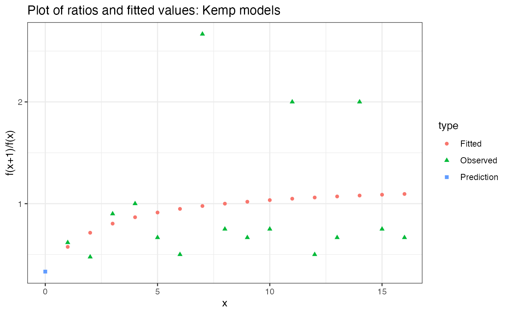

breakaway is a package for species richness estimation and modelling. As the package has grown and users have requested more functionality, it contains some basic generalisations of the statistical philosophy that underpins breakaway to the general alpha diversity case. Because of the flexibility of the modelling strategies, most users of breakaway are microbial ecologists with very large OTU tables, however, nothing should exclude a macroecologist from using the same tools. If you have a macroecology dataset and want to use this package, I would love to hear from you so please feel free to contact me (email or via Github’s Issues/Projects infrastructure).
This vignette will lead you through the most basic way to use breakaway. For a more in depth discussion of how and why estimating species richness is possible, check out the Introduction to diversity estimation vignette.
We’re now going to “collapse” the otu_data’s columns (samples) into frequency tables. Frequency tables…
frequencytablelist <- build_frequency_count_tables(otu_data)
head(frequencytablelist[[63]])## index frequency
## 1 1 35
## 2 2 22
## 3 3 15
## 4 4 17
## 5 5 11
## 6 6 10Interpretation: In this sample, there were 35 different species observed only once (singletons), 22 different species observed only twice, …, 1 species observed 2922 times.
Let’s run breakaway on the first frequency count table
breakaway(frequencytablelist[[1]])## Estimate of richness from method breakaway:
## Estimate is 359
## with standard error 325.81
## Confidence interval: (258, 18180)You should get some output to screen, including your estimate & s.e. You can also investigate a plot of the fits to the ratios as follows:

Note that it is not a fit to the frequencies, it is a fit to the ratios of frequencies. You would never need to include this type of plot in one of your papers. It is solely for you to check for model misspecification. What’s model misspecification? If the model fit (pink circles) don’t remotely follow the pattern of the observed ratios (green triangles), that’s model misspecification.
Sometimes, breakaway’s usual procedure doesn’t work, that is, it gives a negative estimate, which is of course silly. In that case, breakaway returns a different model’s result. It’s called the WLRM. There isn’t a picture. Here is an example of a case where breakaway returns the WLRM.
breakaway(frequencytablelist[[2]])## Estimate of richness from method breakaway:
## Estimate is 346
## with standard error 42.82
## Confidence interval: (283, 2669)
## Cutoff: 15breakaway can defer to the WLRM for several reasons. Perhaps there are too many singletons. Perhaps there isn’t a long enough tail. Perhaps there is false diversity. Regardless, we can see if this failure was sensitive to the singleton count by running breakaway_nof1(). This requires no singleton count (implicit is that the singleton count was erroneous) and predicts it from the other frequencies:
breakaway_nof1(frequencytablelist[[2]][-1,])## Estimate of richness from method PoissonModel:
## Estimate is 75
## with standard error 0.47
## Confidence interval: (75, 77)The reference for breakaway_nof1() is: Willis, A. (2016). Species richness estimation with high diversity but spurious singletons.
breakaway_nof1 is an exploratory tool for assessing sensitivity of breakaway to the singleton count. I recommend it as a sensitivity analysis rather than for diversity estimation.
github.com/adw96/DivNet for alpha and beta diversity tutorials!